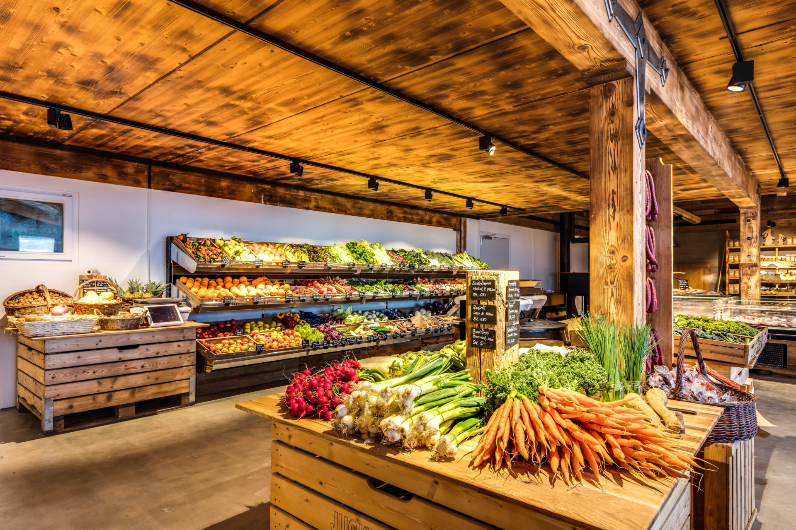

<ion-content>
    <br>
    <ion-searchbar></ion-searchbar>
    <ion-segment scrollable value="heart">
        <ion-segment-button value="star">
            <ion-icon name="nutrition-outline"></ion-icon>
        </ion-segment-button>
        <ion-segment-button value="call">
            <ion-icon name="flag-outline"></ion-icon>
        </ion-segment-button>
        <ion-segment-button value="globe">
            <ion-icon name="wine-outline"></ion-icon>
        </ion-segment-button>
        <ion-segment-button value="basket">
            <ion-icon name="pizza-outline"></ion-icon>
        </ion-segment-button>
    </ion-segment>
    <br>

    <ion-card [routerLink]="['/shop']">
        
        <ion-card-header>
            <ion-card-subtitle>Sursee, Hauptstrasse</ion-card-subtitle>
            <ion-card-title>Hofladen Hugetobler </ion-card-title>
        </ion-card-header>
        <ion-card-content>
            Founded in 1829 on an isthmus between Lake Monona and Lake Mendota, Madison was named the capital of the Wisconsin Territory in 1836.
        </ion-card-content>
    </ion-card>

    <ion-fab horizontal="end" vertical="bottom" slot="fixed">
        <ion-fab-button color="light">
            <ion-icon md="logo-apple" ios="chevron-back-circle-outline"></ion-icon>
        </ion-fab-button>
        <ion-fab-list side="start">
            <ion-fab-button color="light" [routerLink]="['/home']">
                <ion-icon name="map-outline"></ion-icon>
            </ion-fab-button>
            <ion-fab-button color="dark" [routerLink]="['/stores']">
                <ion-icon name="bag"></ion-icon>
            </ion-fab-button>
            <ion-fab-button color="light" [routerLink]="['/user']">
                <ion-icon name="person-outline"></ion-icon>
            </ion-fab-button>
        </ion-fab-list>
    </ion-fab>